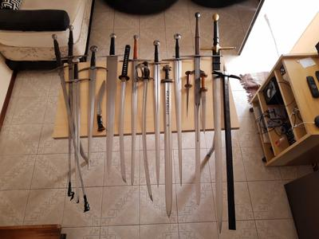
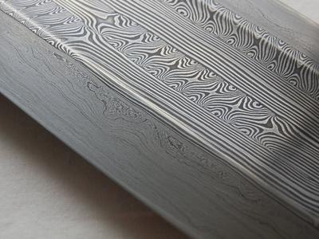
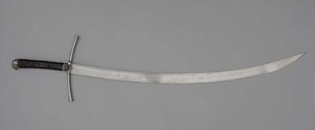

Qué tan especiales son las katanas?

Hay varios aspectos posibles para responder: podemos ver qué tiene de especial desde lo físico en comparación a otras espadas, desde lo técnico (su uso) y podemos ver qué tiene de especial desde lo cultural. Voy a responder con detalle sobre el primer aspecto, un poco menos del segundo, y muy poco del tercero. Pero spoiler alert: la katana no es una espada super especial, como mucha gente quiere creer. Lamentablemente hay mucha desinformación al respecto :)
Lo físico
Mucha gente tiene la idea de que las katanas son espadas especialmente livianas y ágiles, o increíblemente filosas, o de un metal extraordinariamente resistente o bueno, en comparación a las espadas del resto del mundo, o especialmente de la Europa medieval y del renacimiento. Lamentablemente la mayoría de estas ideas se arraigan en mitos, perpetrados por juegos, películas, y hasta instructores de artes marciales muy poco informados.
Peso:
Respecto a su peso y agilidad: la katana típica tenía una hoja de unos 70cm, y pesaba alrededor de 1.1 o 1.2 kg. Obviamente hay mucha variación en estos números, pero son los valores más "normales" en katanas históricas.
Si queremos comparar eso con espadas Europeas nos encontramos con un problema: la katana es una espada de dos manos, sonaría lógico compararla contra espadas de dos manos, pero para los estándares europeos la katana tiene una hoja muy corta, del largo de una espada de una mano. Así que comparemos con ambos grupos:
Comparando contra espadas europeas con hojas de tamaño similar, es decir, espadas de una mano, podemos ver que la katana pesa lo mismo que una espada europea típica de ese largo. Las espadas medievales de hojas de 70cm pesaban también alrededor de 1.1 o 1.2 kg. También encontramos variación, pero de vuelta, esos son los valores normales. Así que la katana no tiene ningún tipo de construcción super liviana: pesa literalmente lo mismo que espadas europeas del mismo largo.
Comparando contra espadas europeas de dos manos notamos que en promedio las katanas son más livianas. Pero es una comparación injusta porque la típica espada europea de dos manos tenía una hoja de 90cm, y no 70cm como la katana. Es decir, casi un 30% más largas. Cuánto pesaba la típica espada de dos manos europea? Alrededor de 1.5kg (de vuelta, con variación). Lo que es perfectamente lógico! Para una espada con hoja un 30% más largo, es esperable que el peso sea un poco mayor, pero no por estar mal hecha o ser más "primitiva", nada de eso. Simplemente es una espada más larga, así que va a poseer más metal.
Respecto al balance y distribución del peso, también podemos ver que la hoja de la katana es muy similar a espadas europeas de uso comparable. Base más ancha con un poco de distal taper (afinamiento), con un balance alrededor de 10cm de la guarda.
Con esta información está bastante claro que la katana no es un arma más ágil o rápida que cualquier espada europea similar. Es simplemente una espada más.
{kind=link}
(comparemos el largo de la hoja de la katana, respecto a otras espadas europeas. Incluso el sable victoriano de una mano tiene una hoja más larga)
Filo:
Un aspecto interesante de la katana es que por su construcción, el filo de la espada está compuesto de un acero más duro que el que se usa para su espina. Esto tiene algunas ventajas respecto al filo, pero no son las ventajas que la gente suele imaginar.
Cualquier acero, por más blando que sea, se puede afilar hasta ser comparable un bisturí. El problema de un acero blando no es que no pueda ser filoso, sino que ese filo se va a arruinar mucho más rápido con el uso. Tener un acero muy duro en el filo, permite que ese filo dure más, que requiera menos mantenimiento.
En comparación a espadas europeas, el filo de las katanas suele ser un poco más duro. Ergo, suele mantenerse afilada un poco más de tiempo. Pero no es una diferencia abismal tampoco.
Y también esto trae problemas: un filo levemente más duro, es también un filo levemente más propenso a quebrarse. Es más probable que el filo de una katana se quiebre y se le hagan muescas, que son muy difíciles de arreglar, en golpes que una espada europea por lo general resistiría un poco mejor.
Y hay otro aspecto super importante a la hora de evaluar qué tan bien corta una espada: el espesor de la hoja. Una hoja más fina tiene mucha mejor capacidad de corte que una hoja gruesa, por la resistencia que debe vencer al entrar en el blanco. Y en este aspecto la katana es problemática: la hoja típica de una katana es muy gruesa en términos de espadas. Hay espadas de otras culturas, como las tulwars de la India, que son muchísimo más finas, y en la práctica por ende son muchísimo mejores cortando que lo que es una katana.
Calidad o resistencia del metal:
El mito de que el acero de las katanas es una especie de super acero increíblemente bueno, tiene pocas bases en la realidad. Lo cierto es que la materia prima que se conseguía en el Japón feudal tenía muchas inclusiones de materiales no deseados (similar a muchas partes del mundo), y el proceso de plegado tiene como objetivo remover parte de esas inclusiones, y distribuir más homogéneamente las que no se quitan. El resultado es un buen acero, sin dudas. Pero no un acero extraordinario. Cualquier acero moderno es muchísimo más puro, y el tratamiento térmico preciso moderno logra prestaciones y resistencias muchísimo mejores que las técnicas históricas de cualquier cultura, incluido Japón.
Mucha gente cree que ese proceso de plegado era una especie de tecnología super avanzada exclusiva de Japón, que el resto del mundo no conocía y por eso generaban aceros inferiores. Nada más equivocado: en Europa se realizaban técnicas similares (plegado, y otras incluso más complejas, como el forjado en patrón de espadas de la era vikinga). Pero con el tiempo en Europa se desarrollaron hornos que lograban aceros más puros, haciendo menos necesario el proceso de plegado. Era algo común, y que en un punto se volvió obsoleto.
{kind=link}
(forjado en patrón, técnica similar al plegado pero de mayor complejidad, muy presente en espadas vikingas)
Construcción:
En esto las katanas tienen una característica conocida por muchos, que es poco común: la diferencia en el acero del filo vs de al espina de la espada. Esto se logra utilizando aceros de diferente grado de carbono, y también realizando un templado diferenciado de la hoja (templando más el filo que la espina).
Esto permite lidiar con los problemas de las impurezas, generando un muy buen filo bastante duro, pero montado en una espina con un más capacidad para ceder y no quebrarse tan fácilmente.
Pero no es una característica exclusiva de las katanas. En Europa también existen ejemplos históricos de construcción similar: una espina central de acero más blando, con filos de acero más duro.
Curvatura:
Un detalle pero vale la pena aclararlo: en Europa también se usaban espadas curvas, y mucho. No se trata de una innovación exclusiva de Japón, o de algo objetivamente superior que solo ellos hacían.
Espada recta vs espada curva es un debate que tiene cientos, si no miles de años, y en todas las culturas se dio variedad de opinión al respecto. El contexto muchas veces hizo que una u otra sean más adecuadas en diferentes lugares y épocas. En Europa, las armaduras dictaron una tendencia hacia las espadas rectas (que logran mejores estocadas, y cortes levemente inferiores), simplemente porque cortar hacia una armadura no logra nada.
{kind=link}
(kriegsmesser europeo)
Protección:
Otro aspecto relativamente interesante es la elección del estilo de guarda que tienen las katanas: un disco pequeño. Es discutible, pero por lo general se considera que ofrece un nivel mucho menor de protección en comparación a otros estilos de guardas, como la cruciforme o alternativas más elaboradas.
Pero más allá de la opinión que se tenga respecto a su utilidad, el tener una guarda con forma de disco no es una característica exclusiva de las katanas. Hay otros tipos de espadas asiáticas con guardas similares (como los Dao chinos).

(Dao chino)
Rigidez:
Un último aspecto interesante es que en comparación a las espadas europeas, la katana suele tener una hoja un tanto más rígida, menos elástica. Esto tiene también sus ventajas y problemas.
La principal ventaja es que hace más fácil cortar, es un poco más permisiva si la técnica del atacante no es tan buena. Las hojas europeas requieren mejor alineación del filo para cortar adecuadamente, mientras que con una katana se puede tener el filo un poco peor alineado (por falla de la técnica del usuario), pero igual cortar de forma efectiva. Esto la hace bastante amigable para novatos. Pero un cortador experto puede cortar igual de bien con ambas.
Claramente también ayuda un poco en las estocadas, ya que la flexión es energía perdida.
La principal desventaja es que la elasticidad de las espadas europeas las hace más duraderas. Un impacto muy fuerte lateral flexiona la hoja, pero la misma vuelve a su forma original, como un resorte. En el caso de la katana, por cómo son tratados los aceros que la componen, tiene más tendencia a doblarse y permanecer doblada en lugar de volver a su forma original.

Lo técnico
Mucha gente tiene la idea de que en Japón los samurais dedicaban su vida a estudiar el combate con espada, desarrollando técnicas super avanzadas, mientras que en Europa la gente se pegaba garrotasos a lo bruto, sin técnica alguna.
La realidad, de vuelta, no es esa. En cambio en ambos lugares existieron y se desarrollaron artes marciales muy avanzadas de combate con espada. Sistemas completos con principios, técnicas, variaciones de estilo, etc.
Simplemente que en la cultura popular, las artes marciales asiáticas se difundieron y modernizaron muchísimo, mientras que las europeas fueron prácticamente olvidadas.
Pero hoy en día existe mucha gente practicando artes marciales históricas europeas (HEMA), utilizando manuscritos medievales y del renacimiento escritos por los mismos maestros que enseñaban en esas épocas, para revivir dichas artes.
Y lo interesante es que hay muchísimo en común entre ambos mundos. Hay técnicas y posturas que pueden encontrarse casi idénticas entre manuscritos japoneses e italianos. Los principios que guían ambas artes también son muy muy similares.
En definitiva, no existen tantas formas diferentes de usar una espada de dos manos y poco más de 1kg de manera efectiva. Quienes usaban técnicas efectivas sobrevivían, quienes no, morían. Y por ello ambas culturas luego de siglos de uso, llegaron a conclusiones relativamente similares.

(página del manuscrito "Il Fior di Battaglia", escrito en el 1400. Versión completa online: Fior di Battaglia (MS Ludwig XV 13) )
Lo cultural
En esto puede haber una diferencia muy importante entre la katana y las espadas de Europa (no hablo de otras culturas por que no conozco tanto).
En Europa la espada siempre tuvo un poco de "mística", pero no al nivel de religiosidad que adquirieron las katanas en Japón.
Si en Europa alguien pensaba que podía hacer una espada con mejor diseño, más efectiva, la hacía y nadie lo iba a mirar como un "irrespetuoso de la cultura de la espada". Eso permitió muchísima más variación de formatos y estilos que lo que vemos en Japón. No es que en Japón las katanas no variaban, pero son muy pequeñas variaciones en comparación. Una hoja un poco más larga, una curva un poco menos pronunciada, una guarda un poco más amplia, más o menos mesas en la hoja, etc. Mientras que en Europa en el mismo tiempo, se pasó de guardas de cruz a guardas que cubrían toda la mano, al mismo tiempo había hojas curvas y rectas, hojas con filos paralelos o hojas super triangulares, muy anchas y muy angostas, cruces y pomos de decenas de formatos, etc.
Esto también llevó a que Japón valore y conserve muchísimo mejor sus espadas históricas, y que se desarrollen incluso artes de conservación alrededor de ellas. Una hoja del año 1500 puede verse hoy en perfectas condiciones, mantenida por generaciones de pulidores, y familias que las atesoraron con valor hasta religioso.
En Europa en cambio, la mayoría de las que sobrevivieron se encuentran super maltratadas, mal mantenidas, oxidadas, etc. Y por lo general, luego de años de estar tiradas o escondidas en algún lugar, sin que se les preste demasiada atención.
Esto contribuyó mucho al mito de que las katanas eran especialmente bien hechas, por culpa de ver hojas en estado casi perfecto de un lado, mientras que del otro solo veíamos cosas oxidadas y en estado de abandono.


(estado típico de conservación de una katana vs el estado típico de conservación de una espada europea)
En resumen
La katana es un arma con un lugar muy especial dentro del mundo actual de espadas, pero más por accidentes históricos y diferencias culturales, que por las características del arma en sí o de sus técnicas asociadas.
Comments
Comments powered by Disqus